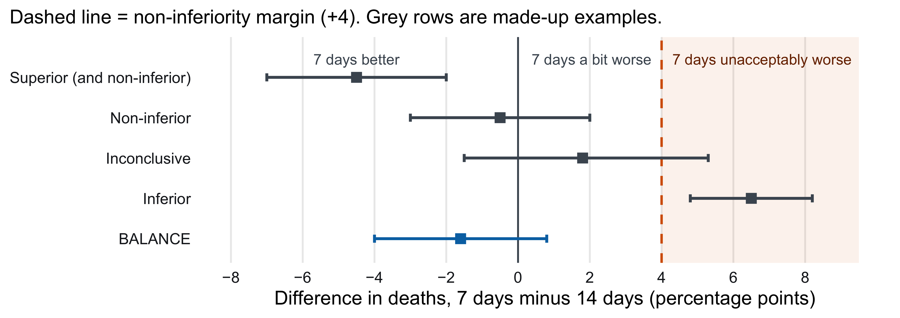
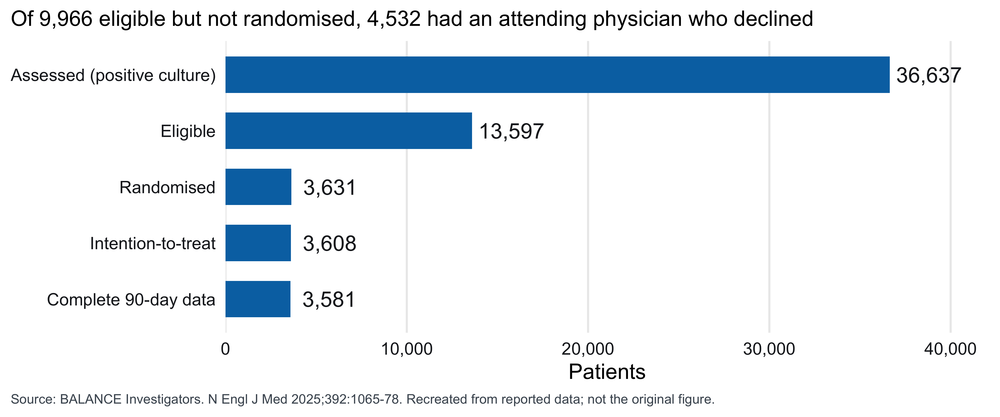
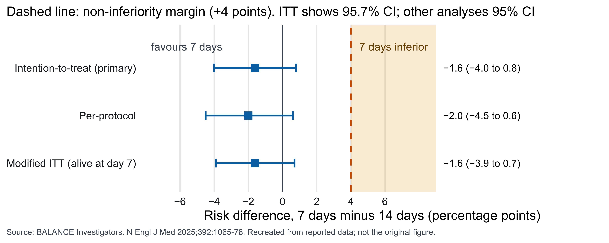
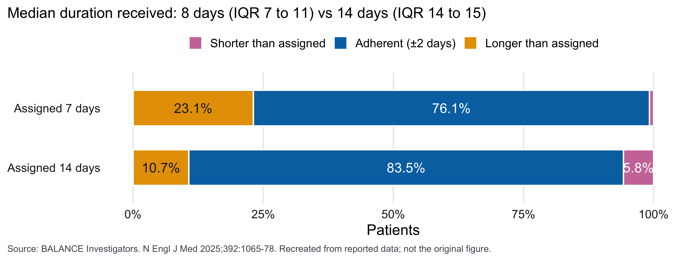
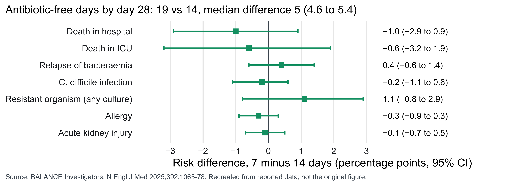

The BALANCE trial · N Engl J Med 2025;392:1065-78 · Journal club
16 November 2026
By the end of this session you should be able to:
Mrs D, 72. E. coli bacteraemia from pyelonephritis. Admitted to ICU on noradrenaline.
Day 7: afebrile for 72 hours, off vasopressors, eating. Switched to an oral agent the isolate is susceptible to.
The ward pharmacist asks: stop today, or complete 14 days?
Mrs D on day 7. Show of hands, then click to tally.
| Trial | Patients | Population | Result |
|---|---|---|---|
| Yahav 2019 [2] | 604 | Gram-negative, uncomplicated | 7 d non-inferior |
| von Dach 2020 [3] | 503 | Gram-negative, uncomplicated | 7 d non-inferior |
| Molina 2022 [4] | 248 | Enterobacterales | 7 d non-inferior |
Gaps: few ICU patients, gram-negative only, 10-point margins or composite outcomes.
P
Hospitalised adults, ward or ICU, with bacteraemia from a pathogenic organism
I
7 days of adequate antibiotic therapy
C
14 days of adequate antibiotic therapy
O
Death from any cause by 90 days
T
Therapy: is a shorter course as safe as the usual course?
T
Randomised controlled trial: the best design for a therapy question
Question: is the new treatment better?
Question: is the new treatment not unacceptably worse?

+4
percentage points of extra deaths: the most BALANCE would accept
18%
of the expected 22% death rate with 14 days, in relative terms
Earlier trials used 10 points, a much looser test.
A non-inferiority trial concludes that 7 days is non-inferior to 14 days. This means:
Included
Excluded
Chance decides who gets which treatment
Nobody can know or influence the next allocation in advance
Who knows which treatment a patient is getting?
Why did BALANCE keep the allocation hidden until day 7?
The chance a trial gets the right answer when the answer is “yes”
| Truth: non-inferior | Truth: worse than margin | |
|---|---|---|
| Trial says non-inferior | Correct | Type I error (alpha): 2.5% |
| Trial says not shown | Type II error (beta): 20% | Correct |
3626
patients planned
3608
patients analysed (intention-to-treat)
Observed 14-day mortality was 16.1%, lower than the 22% assumed.
BALANCE was designed with 80% power. What does this mean?
The range of true effects that fit the data
Why is the primary result reported with a 95.7% rather than a 95% confidence interval?
“Analyse as randomised”
“Analyse those who did as planned”
Mr K is randomised to 7 days, but his team keeps antibiotics going to 12 days. In the intention-to-treat analysis he is counted in:

| Characteristic (n = 3608) | Value |
|---|---|
| Median age | 70 years |
| In ICU at enrolment | 55.0% |
| Community-acquired | 75.4% |
| Urinary source | 42.2% |
| Monomicrobial gram-negative | 71.0% |
| E. coli | 43.8% |

1.6
ARR, percentage points (point estimate)
10%
RRR (point estimate)
63
NNT (point estimate)
The CI runs from NNTB 25 through no effect to NNTH 125. An NNT is not meaningful when the CI crosses zero.
| Measure | Plain English | BALANCE (ITT) |
|---|---|---|
| ARR | Difference in risk: risk with 14 days minus risk with 7 days | 16.1% − 14.5% = 1.6 points |
| RRR | That difference as a share of the comparator risk | 1.6 ÷ 16.1 = 10% |
| NNT | Patients to treat for one extra good outcome: 100 ÷ ARR | 100 ÷ 1.6 ≈ 63 |
A treatment lowers the risk of death from 10% to 8%. What is the NNT?

In the gram-negative subgroup, the difference was −2.8 points (95% CI −5.6 to −0.1). What should we conclude?

19 vs 14
Antibiotic-free days by day 28 (median); difference 5 (95% CI 4.6 to 5.4)
10 vs 11
Days in hospital (median); difference −1 (95% CI −1.5 to −0.5)
ITT difference −1.6 points (95.7% CI −4.0 to 0.8); margin +4. Which statement is correct?
Authors
In hospitalised patients with bloodstream infection, “antibiotic treatment for 7 days was noninferior to treatment for 14 days” [1]
Our appraisal (next slides)
Agree for the included population. Caution where excluded or under-represented.
Was the non-inferiority design reported properly?
| Item [6] | BALANCE |
|---|---|
| Margin prespecified and justified | Yes: 4 points, tighter than the 10 points used elsewhere |
| Sample size based on margin | Yes: 3626 planned, 3608 analysed |
| ITT and per-protocol reported | Yes, both non-inferior |
| CI interpreted against margin | Yes (95.7% CI) |
| Reference treatment proven effective | No: 14 days is custom, not placebo-tested |
A structured set of questions any reader can ask of an RCT
| CASP question [7] | Judgement |
|---|---|
| Focused question; randomised | Yes |
| All patients accounted for | Yes: 99.3% and 99.2% with day-90 data |
| Blinding | Partial: concealed to day 7, open thereafter; analyses blinded |
| Groups similar at baseline | Yes (Table 1) |
| Treated equally apart from intervention | Unclear: co-interventions not reported |
| Important outcomes covered | Mortality yes; function and patient-reported outcomes no |
Could the trial’s conduct have pushed the result one way?
| Domain [8] | Judgement | Reason |
|---|---|---|
| Randomisation | Low | Web-based, concealed, balanced groups |
| Deviations from intended intervention | Some concerns | Open-label after day 7; 23.9% vs 16.5% non-adherence |
| Missing outcome data | Low | 0.7% lost to follow-up |
| Measurement of outcome | Low | All-cause death |
| Selection of reported result | Low | Protocol and SAP published in advance |
| Overall | Some concerns | Driven by deviations domain |
23% of the 7-day group received longer courses. In an ITT analysis of a non-inferiority trial, this tends to:
| Outcome [11] | Certainty | Main reason |
|---|---|---|
| 90-day mortality | High | Large trial, precise against margin, consistent with earlier RCTs |
| Antibiotic exposure | High | Large, objective difference |
| Relapse | Moderate | Imprecision: rare events |
| C. difficile, resistance | Low | Imprecision; under-ascertainment |
Applies to the trial population; downgrade for indirectness outside it.
Bottom line: for improving inpatients with uncomplicated, non-S. aureus bacteraemia, plan 7 days and justify anything longer.
A trial asking whether a new option is not unacceptably worse than the standard. Success = the harm end of the confidence interval stays inside the margin.
The largest extra harm we agree in advance to accept. BALANCE: 4 extra deaths per 100.
Intention-to-treat: analyse everyone as randomised. Per-protocol: analyse only those who got the assigned treatment. In non-inferiority trials, check both.
The chance of showing a true effect. 80% power = a 20% chance of missing it (type II error).
The accepted risk of a false-positive conclusion (type I error). BALANCE: 2.5% one-sided.
The range of true effects compatible with the data. Narrow = precise.
ARR: difference in risk between groups. NNT: 100 ÷ ARR (in percentage points).
BALANCE: 7 vs 14 days of antibiotics for bloodstream infection